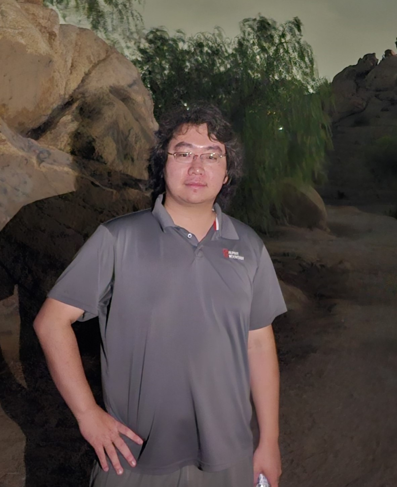

Zhixu Li 黎之旭
Ph.D. student advised by Prof. Qian Zhang at UC Riverside
Contact me at: Zli538@ucr.edu or calt2008lzx@gmail.com
Ph.D. student advised by Prof. Qian Zhang at UC Riverside
Contact me at: Zli538@ucr.edu or calt2008lzx@gmail.com
Hi, I am Zhixu Li, a first-year Ph.D. student of Professor Qian Zhang at UCR. My current research interests include intersection of Graph Generation and Software Engineering. I remain open and eager to discover and dedicate time to additional areas that spark my interest.
My personal blog is here
Selected to serve in ASPLOS’24 Artifact Evaluation Committee. -----July.2023
Started my new journey as a Ph.D. student at UCR. -----Sep.2023
Selected to serve in 24th ChinaSys Workshop (ChinaSys 2023 Posters) Program Committee.-----June.2023
University of California Riverside Riverside, CA, US
PhD student -----Sep. 2023-Current
University of California Riverside Extension Riverside, CA
Graduate Preparation Program in Engineering (GPP-E) -----Sep. 2022-June.2023
UCR,CSE
Reader(TA) for CS142 -----Jan,2023~ April,2023
UCR,CSE
Reader(TA) for CS260 -----April,2023~June,2023